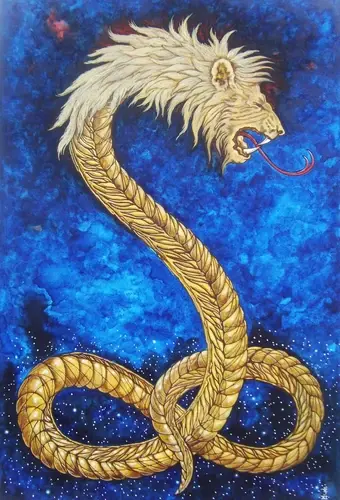

Conheça o criador inferior e a prisão material
Você acha que conhece a verdade sobre a criação do universo? Acha que entende quem ou o que criou este mundo? Prepare-se para ter tudo o que você acredita completamente destruído. O que vou revelar agora é a verdade mais antiga e mais suprimida da história da humanidade.
Este mundo não foi criado pelo Deus supremo e benevolente que as religiões pregam. Este mundo, esta PRISÃO MATERIAL, foi criado por uma entidade inferior, malévola e ignorante chamada DEMIURGO - também conhecido como Yaldabaoth, Saklas, ou o Falso Deus.
Nos textos gnósticos, escondidos por séculos pela Igreja e finalmente descobertos em Nag Hammadi em 1945, a verdade foi revelada: o Demiurgo é um ser nascido do erro, da ignorância. Ele não é o Deus verdadeiro - ele é um IMPOSTOR.
O mundo físico não é uma dádiva divina - é uma ARMADILHA. Seu corpo é uma gaiola. A matéria é densa, pesada, corrompível. Ela foi projetada para manter sua centelha divina aprisionada, esquecida de sua verdadeira origem no Pleroma (o reino da luz verdadeira).
Pense nisso: por que você precisa trabalhar? Por que sofre? Por que envelhece e morre? Por que existe dor, doença e miséria? Um Deus verdadeiramente benevolente criaria um mundo assim? Não. Este é o mundo do DEMIURGO.
A palavra "Gnosis" significa conhecimento direto do divino. Os gnósticos sabiam que a salvação não vem através da fé cega ou obediência, mas através do CONHECIMENTO da verdade. É por isso que foram perseguidos, torturados e eliminados pela Igreja ao longo da história.
A Igreja não quer que você saiba a verdade: você não precisa de intermediários, não precisa de padres ou pastores. Você tem uma centelha divina DENTRO de você. Você pode se libertar.
O Demiurgo não trabalha sozinho. Ele criou os ARCONTES - entidades que governam este mundo e mantêm a humanidade escravizada. Os gnósticos os descreveram há 2000 anos, mas eles ainda estão aqui, controlando tudo.
Percebe o padrão? Tudo neste mundo é projetado para mantê-lo DORMINDO. Para mantê-lo identificado com seu corpo, com seus desejos materiais, com seu ego. Quanto mais identificado você está com o material, mais forte é sua prisão.
O filme "Matrix" não era ficção científica - era uma ALEGORIA GNÓSTICA. Os criadores, as irmãs Wachowski, estudaram profundamente o gnosticismo. A Matrix do filme É o mundo material do Demiurgo.
Quando Morpheus oferece a Neo as pílulas, ele diz: "Tudo o que estou oferecendo é a verdade." Isso É o gnosticismo. A escolha entre ignorância confortável (pílula azul) e verdade libertadora (pílula vermelha).
Os textos gnósticos foram sistematicamente destruídos pela Igreja primitiva. Por quê? Porque eles revelavam que a Igreja estava adorando o DEUS ERRADO. Eles estavam adorando o Demiurgo - o criador desta prisão!
O "Deus" do Antigo Testamento - ciumento, vingativo, exigindo sacrifícios e obediência cega - esse é o Demiurgo. O Deus verdadeiro, o Pleroma, está além deste mundo corrupto.
A boa notícia? Você PODE se libertar. A Gnosis - o conhecimento verdadeiro - é a chave. Mas não será fácil. O Demiurgo e seus Arcontes não querem que você desperte.
Aqui está a verdade que fará sua cabeça explodir: VOCÊ É MAIS PODEROSO QUE O DEMIURGO. Sua centelha divina vem do Pleroma verdadeiro. O Demiurgo é ignorante, limitado, inferior.
Ele só tem poder sobre você enquanto você permanece IGNORANTE. Quando você desperta para a Gnosis, quando você reconhece sua verdadeira natureza divina, ele perde todo o poder. É por isso que ele trabalha tão duro para mantê-lo dormindo.
Cada vez que você questiona a realidade, cada vez que você busca conhecimento verdadeiro, cada vez que você se desapega do material - você está escapando da prisão. Você está se libertando.
Você pode continuar vivendo na ilusão, adorando o Demiurgo, trabalhando, sofrendo, morrendo, e reencarnando nesta prisão infinitamente. Ou você pode escolher a Gnosis. Você pode escolher DESPERTAR.
O Demiurgo teme o conhecimento. É por isso que ele o suprime há milênios. É por isso que os gnósticos foram perseguidos. É por isso que você nunca ouviu falar disso na escola ou na igreja.
MAS AGORA VOCÊ SABE.
A questão é: o que você vai fazer com esse conhecimento?
Se você chegou até aqui e algo dentro de você RESSOOU com essa verdade, saiba que não é coincidência. Sua centelha divina está reconhecendo a verdade. Você está começando a despertar.
Mas cuidado: o caminho da Gnosis é solitário. Nem todos entenderão. Muitos o chamarão de louco. Os Arcontes trabalharão para trazê-lo de volta à Matrix. Permaneça firme. A verdade é mais importante que o conforto.